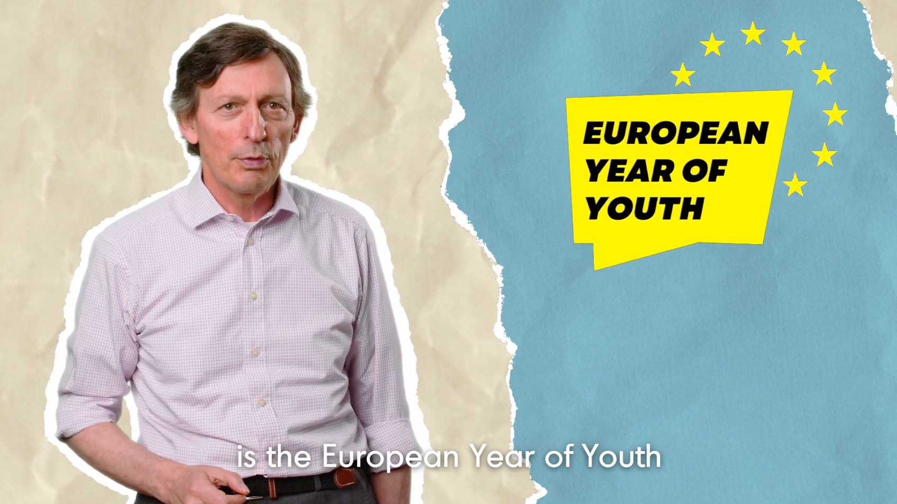
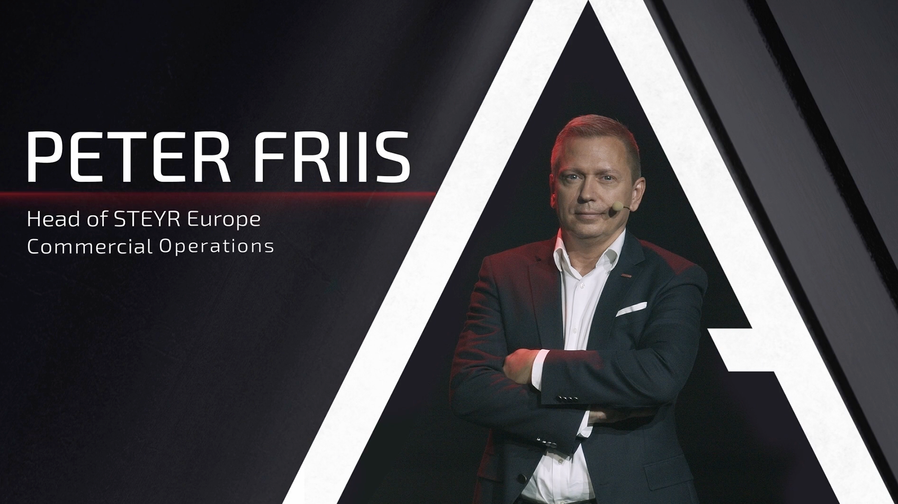
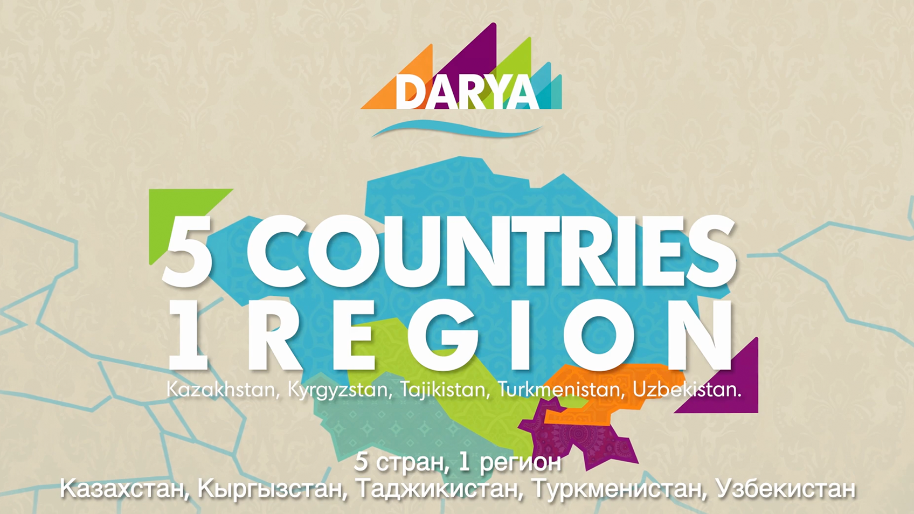

Istituzionale sì, ma con stile. Insieme a Cafker Productions, abbiamo pensato ad uno stile grafico capace di creare un connubio tra la comunicazione istituzionale di Xavier Matheu (direttore di ETF), e la freschezza comunicativa richiesta dai social media.

Per il lancio del nuovo Steyr Terrus CVT, ho realizzato per Smart Factory l'intero pacchetto di grafiche animate destinate ai due ledwall presenti sul set

Per la presentazione del progetto DARYA, ho realizzato le grafiche animate del video promozionale. Grazie ad Adobe After Effects, ho dato vita agli elementi visivi del progetto, realizzando animazioni adatte alla comunicazione di un ente europeo.